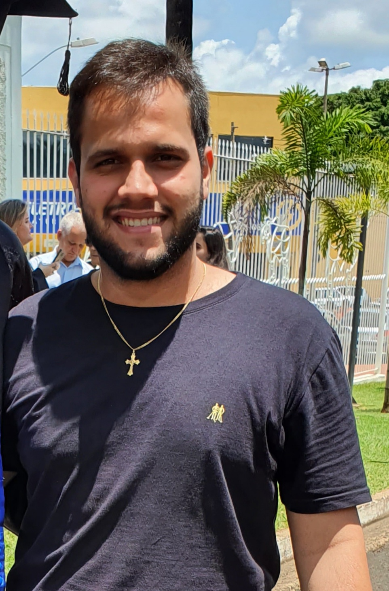

Curriculo Vitae
Nome: Mateus Silva Paim
Idade: 27 anos
Objetivo
Porcuro novas oportunidades e desafios na tecnologia para o meu crescimento no mercado.
Contatos
Endereço: Rua Azaleias, 456 - Bairro de Lourdes
E-mail: mateuspaiim@gmail.com
Telefone: +55 (34) 99981-4377
Linkedin: https://www.linkedin.com/in/mateus-silva-paim-813b9a144/
Formação
IFTM - Campus Uberaba: Bacharelado em Engenharia Agronômica -2014-2018
SENAI - Uberaba: Técnico em Automação Industrial - 2013-2014
MACH1: Progamador Junior - 2022-2023
Qualificações e Atividades Complementares
- Conhecimento intermediário em software AutoCaD;
- Estatísticas experimentais aplicadas à agricultura com software R. Tempo de curso: 16 horas no total
- Aluno Discente Titular para a composição do Colegiado do Curso de Engenharia Agronômica do Instituto Federal do Triângulo Mineiro – Campus Uberaba. 2015 a 2017.
- Participação Trainee no cargo Administrativo/Financeiro da Liga Empreendedora Universitária de Uberaba. (Outubro 2016 a Junho 2017)
Projetos de Pesquisas:
- 2015 – 2016 - Germinação de sementes de buriti (Mauritia flexuosa L.f.) em condições semi-assépticas, bolsista da FAPEMIG
- 2016 – 2017 - Desenvolvimento pós-plantio de buriti (Mauritia flexuosa L.f.), bolsista da FAPEMIG
Experiência Profissional
- Sutherland Produce Limited. 03/19 – 07/19:
Trabalhador agrícola: plantio, colheita e empacotamento das culturas (brócolis, alface e silverbeet).
- SC São Sebastião (Silvio Jr.). 18/08/2018 a 18/11/2018:
Irrigação: monitoramento da construção do Pivô Central (montagem do adutor, Pivô Central e regulagem da vazão). Supervisor de Engenharia Elétrica: Patricio Sebastian Segovia Montenegro.
Melancia: tratamentos culturais (irrigação localizada, plantio, adubação, controle de pragas e doenças).
Abóbora: práticas culturais (irrigação por pivô central, fertilização, controle de pragas, doenças e polinização).
Cana-de-açúcar: tratamentos culturais (preparo do solo, reforma da área, controle de pragas e doenças, adubação, colheita e aplicação de pesticidas). Gerente de Agronegócio Supervisor: Douglas Dumont Silva Miranda.
- Bar e Mercearia Neomar LTDA. 02/2012 a 06/2014:
Balconista: Atendimento ao cliente: vendas de alimentos e bebidas.